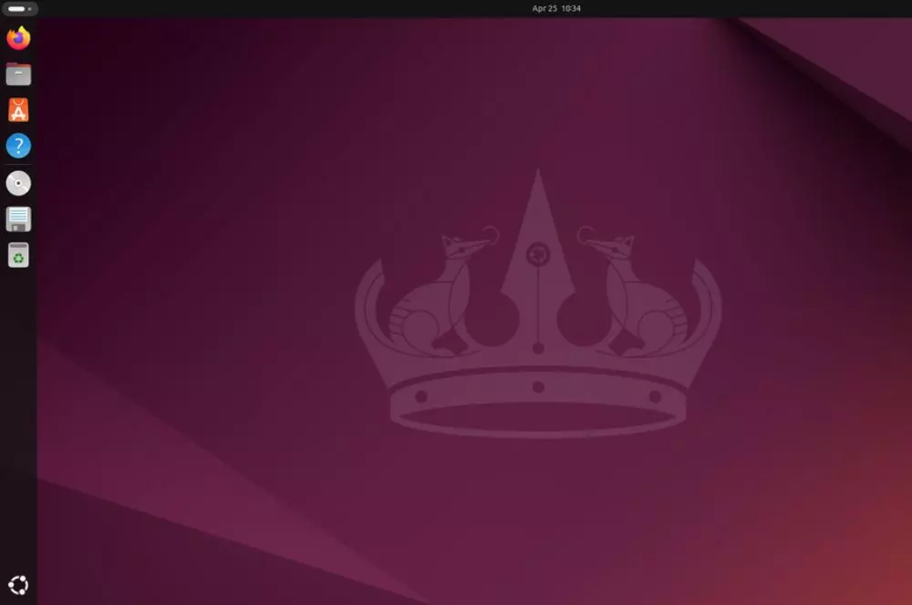

¿Qué es Linux?
Linux es un sistema operativo de código abierto basado en Unix. Fue creado por Linus Torvalds en 1991 y se distribuye bajo la Licencia Pública General de GNU (GPL), lo que significa que cualquiera puede ver, modificar y distribuir su código fuente de manera libre.
A diferencia de otros sistemas operativos como Windows o MacOS, Linux se utiliza principalmente en servidores, pero también está presente en escritorios, dispositivos móviles (como Android), y otros sistemas embebidos.
Wikipedia. Linux. Wikipedia. Última modificación: 11 diciembre 2024

Historia
La historia de Linux se comienza a escribir un poco más tarde, sus orígenes nos hacen remontar hasta principios de los años 80, cuando Richard Stallman, inició el Proyecto GNU con el propósito de crear un sistema operativo similar y compatible con UNIX. En el año 1985, se creó la Fundación del Software Libre y se desarrolló la Licencia pública general de GNU para tener un marco legal que permitiera difundir libremente este software.
En 1991, fue Linus Torvalds, un estudiante de informática de 23 años de la Universidad de Helsinki, quien propone hacer un sistema operativo que se comporte como UNIX pero que, además, funcione sobre cualquier ordenador.
El principal objetivo de este estudiante era crear el núcleo del sistema operativo que fuese totalmente compatible con UNIX y que, de esta manera, permitiese ejecutar todos los programas gratuitos compatibles con UNIX y desarrollados por la Free Software Foundation que vienen con licencia GNU. Para el desarrollo de este núcleo, Torvalds se inspiró en Minix, una versión reducida de UNIX.
Pocos meses después, a finales de agosto de 1991, Torvalds ya contaba con la versión 0.01 de Linux, pero como todavía era algo muy básico y con escasa funcionalidad, decidió seguir desarrollando lo que sería la versión 0.02, que vio la luz en el mes de octubre de ese mismo año y que ya era capaz de ejecutar dos herramientas básicas de GNU.
Wikipedia. Historia de Linux. Wikipedia. Última modificación: 11 diciembre 2024.
Características
Independientemente de la distribución de Linux, hay una serie de características por las que destaca el sistema operativo del pingüino y que hacen que sea elegido por muchos usuarios.
- La gratuidad de Linux
- Código abierto
- Linux es seguro
- Un software multitarea
- Linux es personalizable
- Alto control de dispositivos
- Independiente y estable
- Linux es escalable
ADSLZone. ¿Qué es Linux?. ADSLZone. Última modificación: 11 diciembre 2024.
Ventajas
- Gratuito y de código abierto.
- Alta seguridad y estabilidad.
- Amplia personalización.
Desventajas
- Windows es incompatible con Linux.
- En la mayoría de distribuciones Linux hay que conocer nuestro Hardware a la hora de instalar.
- Mayor tiempo de adaptación.
Red Hat. Qué es Linux. Red Hat. Última modificación: 11 diciembre 2024.
Distribuciones
- Debian Linux
- Ubuntu Linux 
- Fedora Linux
- CentOS Linux
- Arch Linux
- Linux Mint
- Elementary OS
Red Hat. Qué es Linux. Red Hat. Última modificación: 11 diciembre 2024.